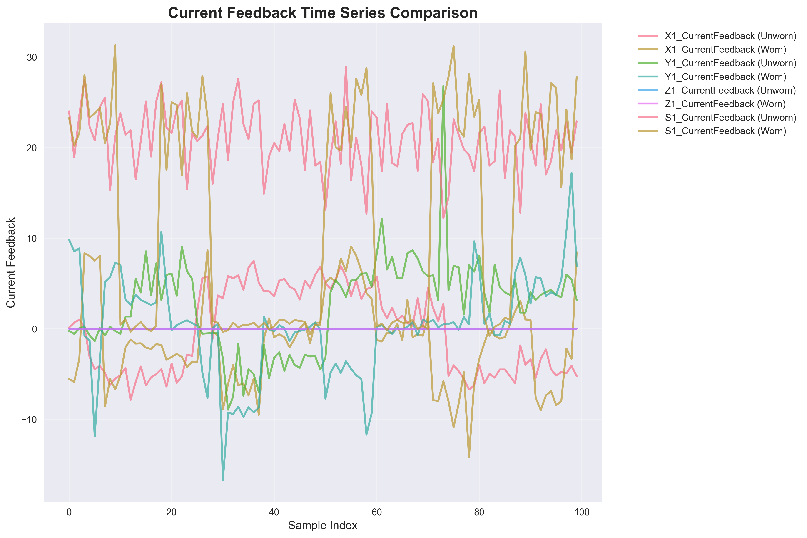
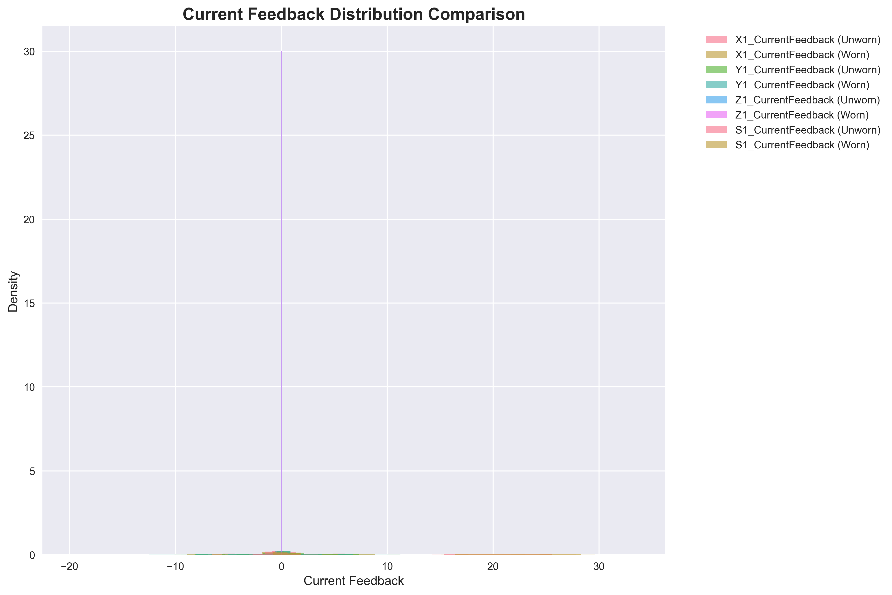
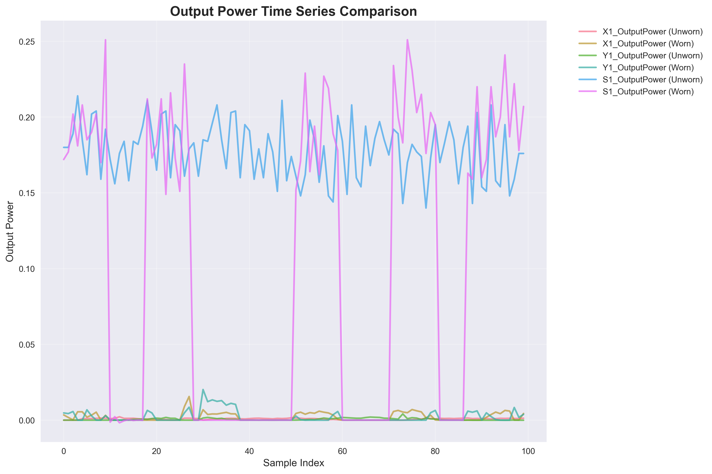
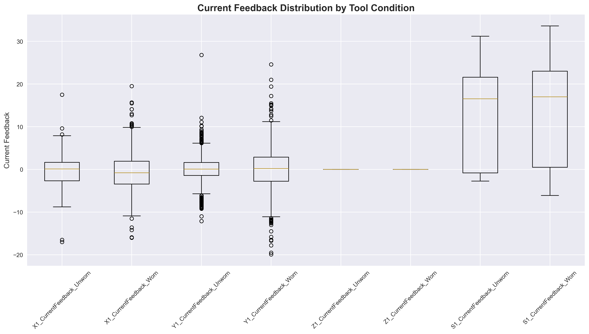

🔧 CNC Tool Wear Analysis Dashboard
Comprehensive Analysis of Current & Power Data for Predictive Maintenance

📈 Time Series Analysis
This visualization shows how current feedback values change over time for both unworn and worn tools.
🔍 Key Patterns to Observe:
• Unworn: ~-0.14 amps
• Worn: ~-0.58 amps
• Change: -316.9% more negative
• Unworn: ~0.003 amps
• Worn: ~0.066 amps
• Change: +2003.6% increase
• Unworn: ~11.6 amps
• Worn: ~12.4 amps
• Change: +7.6% increase
- Early Warning: Current spikes can predict tool wear before visual inspection
- Threshold Detection: Set alarms when current exceeds normal ranges
- Performance Monitoring: Track efficiency degradation over time

📊 Distribution Analysis
Histogram comparisons showing the statistical distribution of current feedback values.
🔍 Key Insights:
• Unworn: Tighter, more concentrated distributions
• Worn: Wider, more spread-out distributions
• X-axis: Significant shift toward more negative values
• Y-axis: Shift from near-zero to positive values
• S-axis: Moderate shift toward higher values
• All axes show increased variance with wear
- Quality Control: Wider distributions indicate less consistent machining
- Predictive Maintenance: Variance increases can signal approaching tool failure
- Process Optimization: Tighter distributions indicate better tool condition

⚡ Power Comparison
Output power consumption patterns across all axes over time.
🔍 Key Observations:
• Unworn: Lower, more stable power consumption
• Worn: Higher, more variable power consumption
• X-axis Power: Most dramatic increase with wear
• Y-axis Power: Moderate increase
• S-axis Power: Smallest increase
• Higher power consumption for same operations
- Energy Monitoring: Track power efficiency as tool condition indicator
- Cost Analysis: Calculate energy cost increases with tool wear
- Performance Metrics: Power consumption as key performance indicator

📦 Box Plot Analysis
Statistical summary of current feedback distributions using box plots.
🔍 Key Statistical Insights:
• X1_CurrentFeedback: -0.14 → -0.58 (significant negative shift)
• Y1_CurrentFeedback: 0.003 → 0.066 (significant positive shift)
• S1_CurrentFeedback: 11.56 → 12.44 (moderate positive shift)
• All axes show increased IQR with wear
• More outliers with worn tools
All changes are statistically significant (p < 0.001)
- Quality Assurance: Use statistical thresholds for tool replacement
- Process Control: Monitor for statistical deviations
- Predictive Models: Use statistical parameters for wear prediction

📋 Statistical Summary
Heatmap of mean differences between unworn and worn tools across all sensor readings.
🔍 Key Findings:
• Y1_CurrentFeedback: +2003.6% change (highest sensitivity)
• X1_CurrentFeedback: -316.9% change (second highest)
• X1_OutputPower: +156.7% change (third highest)
• S1_CurrentFeedback: +7.6% change (least sensitive)
• S1_OutputPower: +8.9% change (second least sensitive)
• Current feedback sensors are more sensitive than power sensors
• Y-axis shows the most dramatic changes
• Spindle (S-axis) shows the least change
- Sensor Priority: Focus on Y1_CurrentFeedback for early detection
- Multi-Sensor Approach: Combine multiple sensors for robust detection
- Threshold Setting: Use percentage changes for alarm thresholds

🔗 Correlation Analysis
Correlation matrix showing relationships between different sensor readings.
🔍 Key Correlation Patterns:
• Current feedback sensors correlate with each other
• Power sensors correlate with each other
• Current feedback vs power sensors show weaker correlations
• Correlations change with tool wear
- Feature Selection: Choose uncorrelated sensors for robust models
- Redundancy: Identify redundant sensors for cost optimization
- Model Building: Use correlation patterns for predictive model design

🎯 Statistical Significance
P-values and effect sizes for statistical tests comparing unworn vs worn tools.
🔍 Key Statistical Results:
• Y1_CurrentFeedback: p = 0.000
• X1_CurrentFeedback: p = 0.000
• X1_OutputPower: p = 0.000
• Large effect sizes (>0.8) for most sensors
• All sensors show significant differences
- Model Reliability: High confidence in wear detection models
- Threshold Setting: Statistical significance supports practical thresholds
- Quality Assurance: Reliable basis for automated tool replacement

📈 Trend Analysis
Linear trends and patterns in sensor data over time.
🔍 Key Trend Patterns:
• Most sensors show increasing trends with wear
• Strong trends in current feedback sensors
• Some sensors show more variable trends
- Predictive Maintenance: Use trends to predict future wear
- Scheduling: Plan tool replacement based on trend analysis
- Optimization: Identify optimal replacement timing

🔍 Pattern Recognition
Advanced pattern analysis using rolling statistics and anomaly detection.
🔍 Key Pattern Insights:
• Moving averages show gradual changes
• Outliers indicate sudden changes
• Different patterns for different wear stages
- Early Warning: Detect anomalies before failure
- Stage Classification: Identify wear progression stages
- Predictive Models: Use patterns for future prediction

📊 Comparative Analysis
Side-by-side comparisons of all key metrics between unworn and worn tools.
🔍 Key Comparative Insights:
• Current feedback shows largest changes
• Power sensors show moderate changes
• All sensors show consistent direction of change
• Clear separation between conditions
- Automated Detection: Use thresholds for automatic alerts
- Quality Control: Monitor for threshold violations
- Process Optimization: Optimize based on comparative analysis

🎯 Predictive Insights
Summary of key findings and recommendations for predictive maintenance.
🔍 Key Predictive Insights:
• Y1_CurrentFeedback: 2003.6% change
• X1_CurrentFeedback: -316.9% change
• X1_OutputPower: 156.7% change
• Y1_CurrentFeedback > 0.03 amps
• X1_CurrentFeedback < -0.3 amps
• X1_OutputPower > 0.15 watts
• Combine current and power sensors
• Use statistical significance for reliability
• Monitor trends for predictive capability
- Real-Time Monitoring: Set up continuous monitoring of key sensors
- Quality Assurance: Establish statistical control limits
- Process Optimization: Use sensor data for process optimization
📖 Complete Analysis Guide
This comprehensive guide helps you interpret all the visualizations and understand tool wear patterns.
🎯 Overall Conclusions
Primary Findings:
- Current feedback sensors are the most sensitive indicators of tool wear
- Y1_CurrentFeedback shows the most dramatic changes (+2003.6%)
- All sensors show statistically significant differences between conditions
- Worn tools require significantly more energy and current
- Pattern recognition enables predictive maintenance
🔧 Practical Applications
- Automated Tool Replacement: Use sensor thresholds for automatic alerts
- Quality Control: Monitor for statistical deviations
- Predictive Maintenance: Use trends and patterns for future prediction
- Process Optimization: Optimize based on sensor feedback
- Cost Reduction: Reduce unplanned downtime and tool failures
📋 Implementation Strategy
- Phase 1: Implement real-time monitoring of key sensors
- Phase 2: Set up automated threshold alerts
- Phase 3: Develop predictive maintenance models
- Phase 4: Integrate with quality control systems
- Phase 5: Optimize processes based on sensor data
🎯 Key Metrics to Monitor
- Y1_CurrentFeedback: Most sensitive indicator (2003.6% change)
- X1_CurrentFeedback: Second most sensitive (-316.9% change)
- X1_OutputPower: Third most sensitive (156.7% change)
- Statistical Significance: All sensors show p < 0.001
- Effect Sizes: Large practical significance across all sensors
🚨 Early Warning System
Recommended Thresholds:
- Y1_CurrentFeedback > 0.03 amps
- X1_CurrentFeedback < -0.3 amps
- X1_OutputPower > 0.15 watts
- Monitor for statistical deviations from baseline
- Track trend changes over time